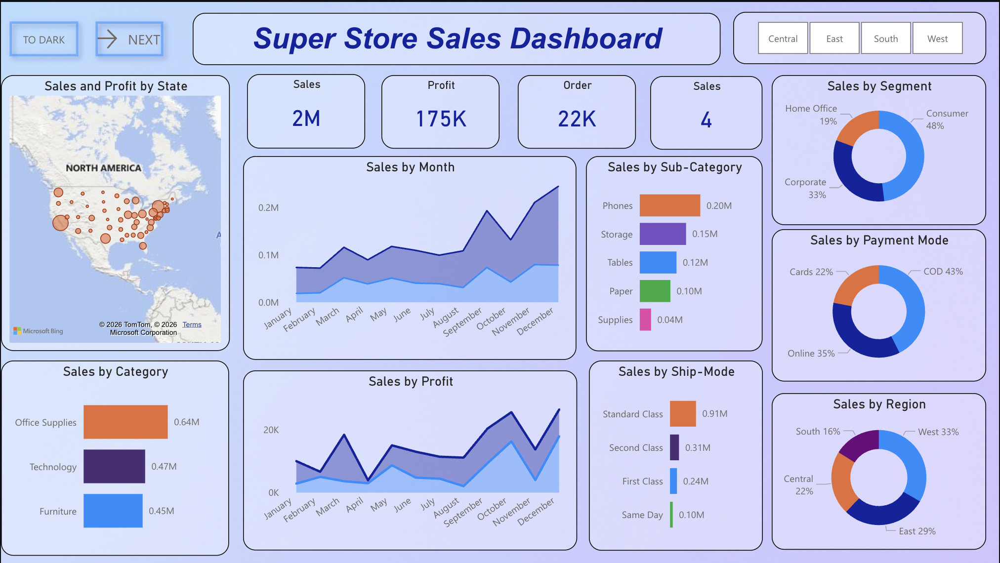

Shubham
Data analyst & AI/ML enthusiast turning messy data into crisp, decision-ready insights.
About Me
I build practical analytics solutions that connect exploration, machine learning, and decision-focused reporting.
My workflow: clarify the business question, clean and model the data, then present insights so stakeholders can act fast.
- End-to-end ML + analytics with Python/SQL.
- Dashboard-driven insights with Power BI and Streamlit.
- Translate technical findings into business-ready recommendations.
Technical Skills
Programming & Analysis
Databases & Storage
Visualization Tools
Statistics & ML
Featured Projects
Selected work with clear business context, technical approach, and measurable outcomes.
Privacy-Preserving Agentic RMN Engine
Privacy-first retail media engine with vector search, CTR re-rank, and agentic ad copy.
Problem: Personalize on-site ads without leaking PII to advertisers.
Approach: ChromaDB semantic retrieval, XGBoost CTR re-rank, DuckDB + Laplace DP aggregation, and Groq-powered agentic copy generation.
Impact: Production-ready flow for 10k+ ads with sub-150ms latency and ε ≤ 0.9 privacy.
Key Result: <10ms retrieval, <1ms re-rank, ≈300ms agentic generation.
Student Exam Score Prediction
End-to-end ML predictor for early performance risk.
Problem: Spot likely performance gaps early.
Approach: Cleaned and modeled student features in Python with a full preprocessing + evaluation pipeline.
Impact: Delivers fast score estimates and surfaces key drivers for interventions.
Key Result: Deployable prediction workflow from raw student records.
LaptopAnalysis
Compare laptops by price, specs, and value.
Problem: Hard to judge price-to-spec value across brands.
Approach: Analyzed pricing and hardware trends in Python/Pandas with visual exploration.
Impact: Simplified shortlisting and price-performance comparison.
Key Result: Reusable notebook for fast model-to-model and price-to-spec comparison.
Sentimental Analysis Project (Hotel Reviews)
Multi-model NLP for structured guest sentiment.
Problem: Noisy hotel reviews are hard to turn into reliable sentiment signals.
Approach: VADER + RoBERTa + BERT with preprocessing and sarcasm-aware checks; consolidated outputs into structured reports.
Impact: Side-by-side sentiment comparison and more dependable review intelligence.
Key Result: Standardized multi-model sentiment into a comparison-ready reporting flow.
Movie Success Analysis
EDA to surface signals tied to movie performance.
Problem: Multiple factors drive movie performance and are hard to weigh manually.
Approach: Explored ratings, genre, budget, and performance indicators in Jupyter to find high-signal relationships.
Impact: Exposed patterns useful for content and release strategy.
Key Result: Actionable feature patterns to guide planning and releases.

SuperStore Analytics Hub
Unified KPI and dashboard hub for faster business reporting.
Problem: Business teams need one place to track core KPIs and drill into performance quickly.
Approach: Built an analytics hub combining Streamlit + embedded Power BI, with file upload, KPI computation, and interactive category-level views.
Impact: Reduced analysis friction by turning scattered data into a single decision-ready dashboard experience.
Key Result: Unified reporting and custom KPI exploration in a single business-facing interface.
Internships
Hands-on analytics work with clear, measurable outcomes.
Data Analyst
Skill Craft Technology · Remote
Optimized reporting data end-to-end—cleaning, visualizing, and operationalizing workflows for faster stakeholder insight.
- Wrangled four datasets (50k+ rows), resolving 12k+ issues to reach 99.8% data reliability.
- Built 25+ Seaborn/Matplotlib visuals, trimming stakeholder reporting prep time by 40%.
- Automated analysis workflows and documented reproducible pipelines on GitHub for seamless handoffs.
Training
Targeted programs that sharpened problem-solving and engineering rigor.
Data Structures and Algorithms (DSA) with C++ & Java
Splen Technologies & Education Pvt. Ltd. · LPU Campus (Offline)
Completed an intensive DSA program in C++ and Java covering arrays, linked lists, stacks, queues, trees, graphs, and advanced sorting/searching. Solved 200+ problems on LeetCode/GeeksforGeeks to strengthen optimization skills, and built a pathfinding visualizer comparing BFS, DFS, A*, Dijkstra, and more in real time.
Resume
A snapshot of practical analytics experience, certifications, and production-ready project work.
Download My Resume
Get detailed information about my experience, education, and certifications in a comprehensive PDF format.
Certifications
Machine Learning
Completed an in-depth course on Machine Learning covering supervised and unsupervised learning, model evaluation, regression, classification, and real-world ML applications using data-driven techniques.
Data Science Professional
Gained hands-on knowledge of data science concepts including data preprocessing, exploratory data analysis, statistical techniques, and data-driven decision making using modern analytical tools.
Generative AI Professional
Learned the principles of Generative AI, including large language models, prompt engineering, and AI-powered content generation techniques used in modern intelligent systems.
Data Structures & Algorithms
Earned certification in Data Structures & Algorithms – strengthened problem-solving skills with hands-on practice in core DSA concepts.
C programming
Certified in C Programming – gained strong foundation in problem-solving, data structures, and algorithmic thinking using C.
Let's Collaborate
Open to internships and entry-level full-time opportunities in Data Analytics and ML.
Get In Touch
Let's collaborate or discuss data-driven solutions! I'm always excited to work on challenging projects and help businesses unlock insights from their data.